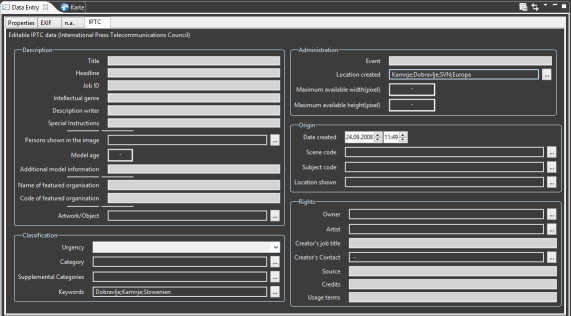

Data entry view
The Data entry view
organizes the various metadata properties into logical groups. Metadata
of single and multiple images can be displayed and edited in one single
step. The Data entry view should be your preferred entry method when
editing large amounts of metadata.

The Data entry view is best invoked via the Data entry perspective (). You
can switch to this perspective via the Open
Perspective button in the main toolbar.
The image metadata is organized into four main sections. The sections
can be opened by clicking on a tab at the top of the view:
- Properties. This section
contains editable metadata not contained in the EXIF and IPTC
standards, such as image name, rating, privacy, etc.
Note: Changing the image name will rename the image file, too.
- EXIF. This section
contains editable EXIF metadata usually NOT provided by the camera such
as image description, copyright information, and GPS data.
- Analogue. This section
contains properties used only in the context of analogue media such as
medium, processing notes, and emulsion. In addition it allows editing
more or less all image EXIF data, so that missing EXIF data can be
supplied manually.
- IPTC. This section allows
editing all IPTC metadata.
Please note, that the data you have entered is only processed when you
hit the Save ( ) button in the view's toolbar. All
fields can be restored to their original content by hitting the Restore (
) button in the view's toolbar. All
fields can be restored to their original content by hitting the Restore ( ) button.
) button.